| Størrelse | Symbol | Enhed |
|---|---|---|
| Tid | \(t\) | s (sekunder) |
| Strækning | \(s\) | m (meter) |
| Hastighed | \(v\) | m/s (eller km/h) |
| Acceleration | \(a\) | m/s² |
(t,s)-diagram
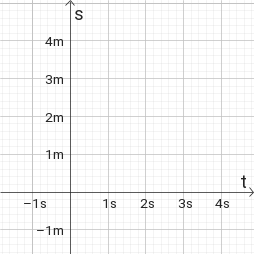
(t,v)-diagram
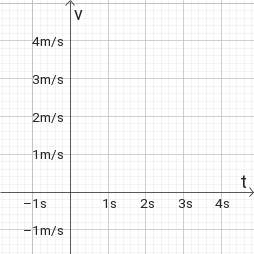
(t,a)-diagram
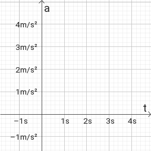
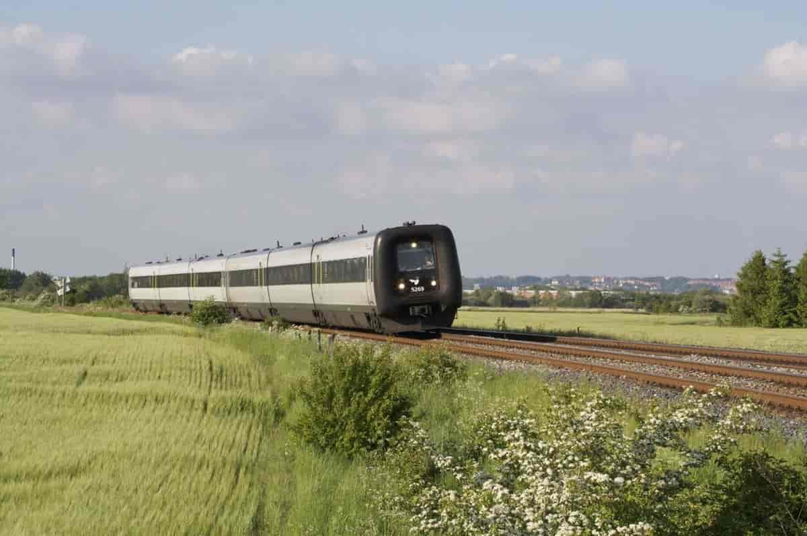
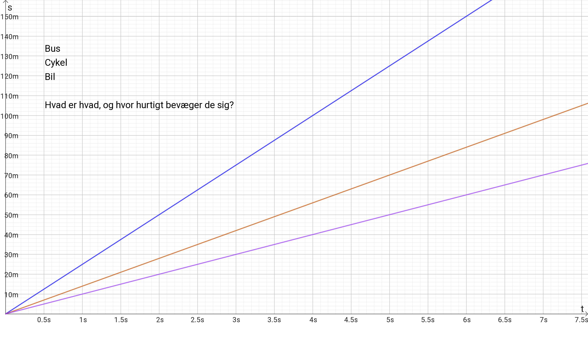
Strækning
Hastighed
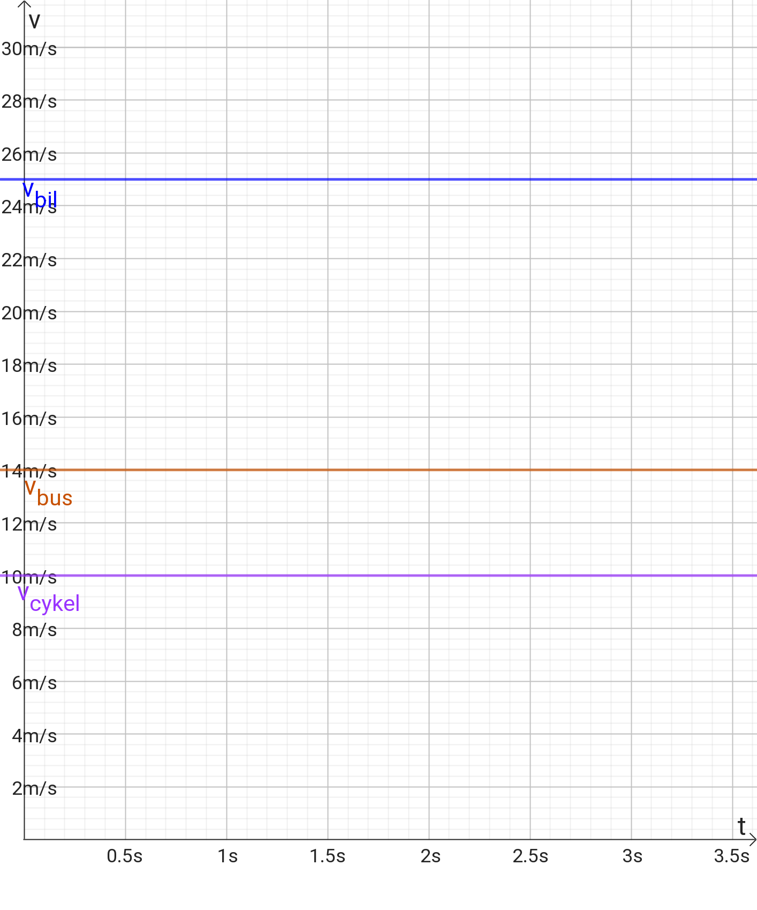
Acceleration
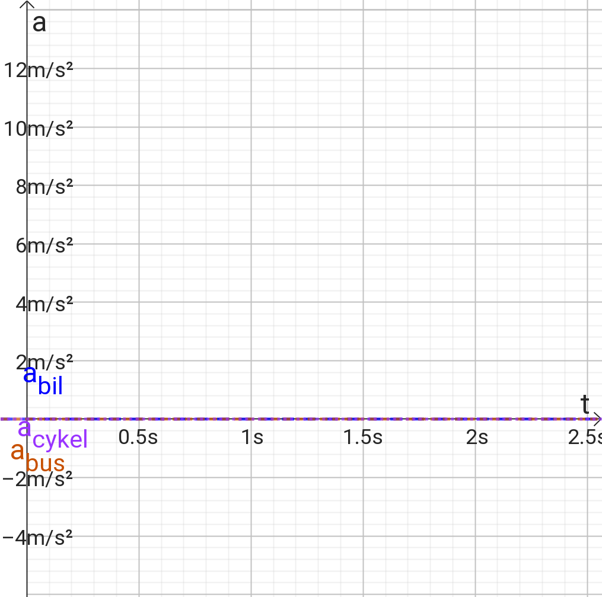
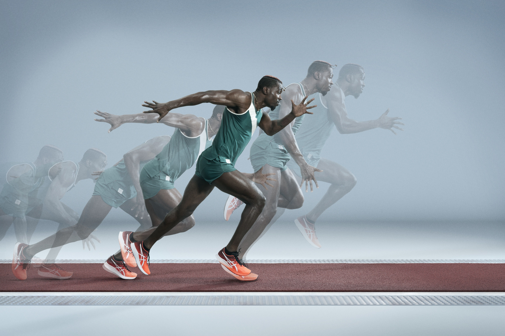
algebri algebra
Kombinér
\[v_{slut} = a \cdot t + v_{start}\]
og
\[s_{slut} = \frac{1}{2} \cdot a \cdot t^2 + v_{start} \cdot t + s_{start}\]
ved at isolere \(t\) i den første ligning og indsætte udtrykket i den anden.
I skal kunne komme frem til:
\[s_{slut}- s_{start} = \frac{v_{slut}^2-v_{start}^2}{2 a}\]
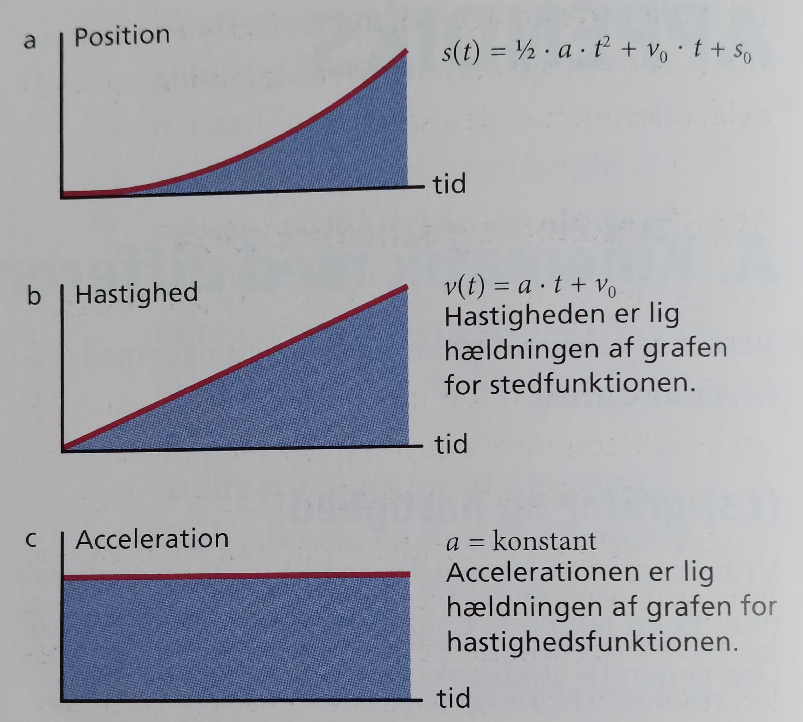
Men også:
Det kan siges kort
Men WTF betyder det!?
Klik(højreklik) på figuren for at se (downloade) dokumentet.
Alea iacta est
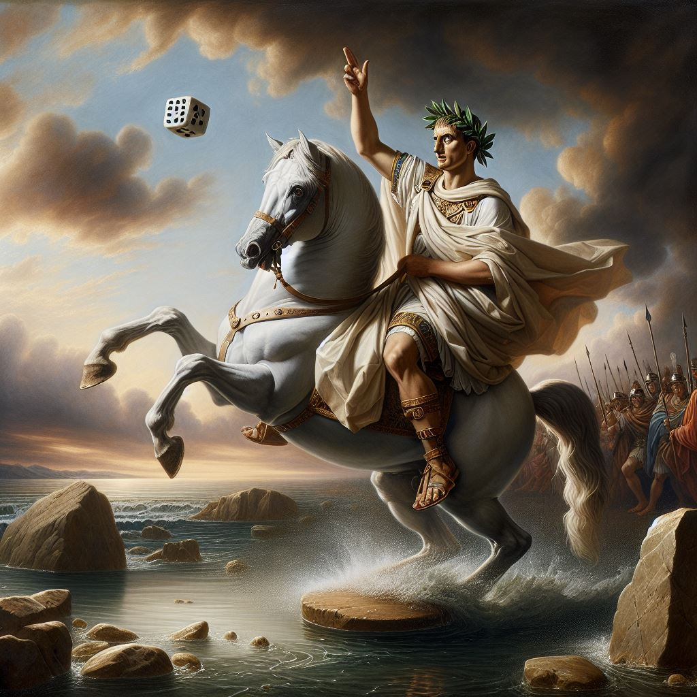
Apparatur
Forsøgsvejledning
Databehandling
Diskussion
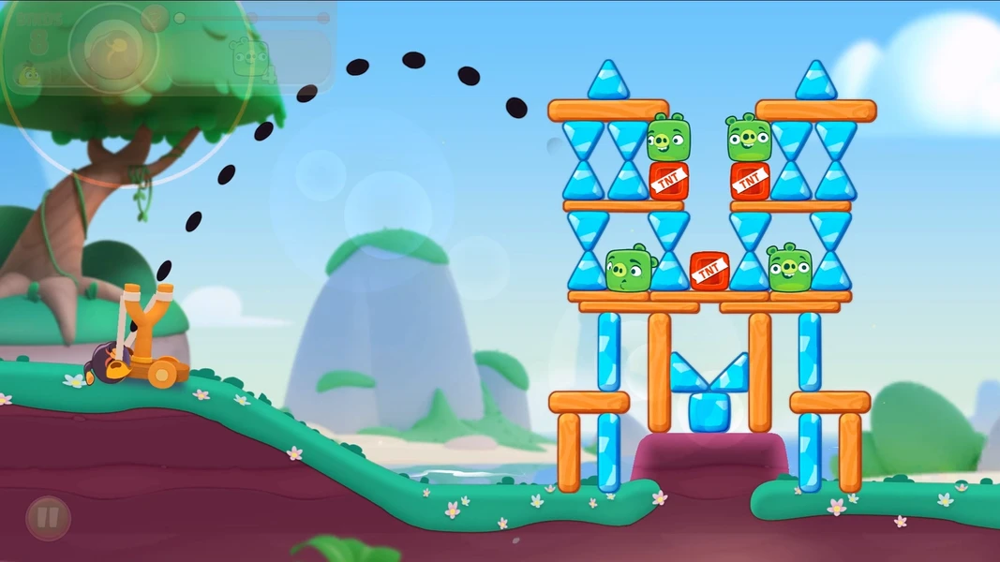
x-aksen
Bevægelse med konstant hastighed.
y-aksen
Bevægelse med konstant acceleration.